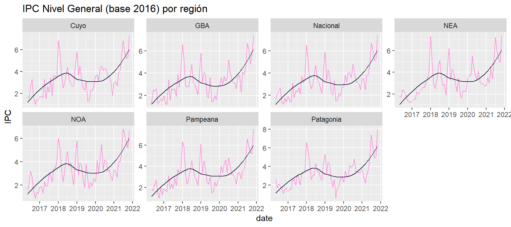
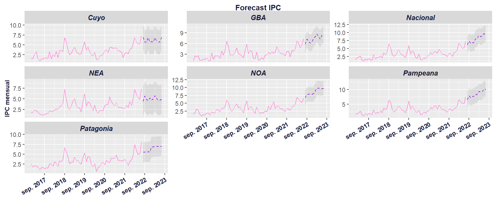

Activamos las librerias 📚
Introducción 🤓
El objetivo principal de este post es compartir una serie de paquetes que son realmente útiles para resolver la compleja tarea de ajustar múltiples series de tiempo y múltiples modelos💪🏼. Asimismo, hay una breve explicación teórica -que lejos está de pretender ser exhaustiva- de los aspectos más sobresalientes de los modelos de series de tiempo ajustados.
Cargamos el conjunto de datos
Para mostrar el funcionamiento de los paquetes, vamos a utilizar el Índice de Precios al Consumidor: Nivel General (mensual) por región, desde el 2017 y hasta julio de 2022. Vale decir que el uso de estos datos es sólo ilustrativo ya que proyectar el IPC demandaría combinar marcos conceptuales económicos y políticos para enriquecer los resultados. El data set se obtuvo utilizado la API se series de tiempo del sitio oficial datos.gob.ar A continuación se muestra como consumir los datos.
# Hacemos un GET sobre el endpoint
obj = GET("https://apis.datos.gob.ar/series/api/series?ids=145.3_INGCUYUAL_DICI_M_34,145.3_INGNEAUAL_DICI_M_33,145.3_INGNOAUAL_DICI_M_33,145.3_INGPATUAL_DICI_M_39,145.3_INGGBAUAL_DICI_M_33,145.3_INGNACUAL_DICI_M_38,145.3_INGPAMUAL_DICI_M_38&format=csv")
# Extraemos el contenido
content <- httr::content(obj,encoding = "UTF-8")
# Creamos un dataframe con los datos
data <- data.frame("Mes"= content$indice_tiempo,
"GBA"= content$ipc_ng_gba_tasa_variacion_mensual,
"Cuyo"= content$ipc_ng_cuyo_tasa_variacion_mensual,
"NEA"=content$ipc_ng_nea_tasa_variacion_mensual,
"NOA"= content$ipc_ng_noa_tasa_variacion_mensual,
"Pampeana"= content$ipc_ng_pampeana_tasa_variacion_mensual,
"Patagonia"= content$ipc_ng_patagonia_tasa_variacion_mensual,
"Nacional"= content$ipc_ng_nacional_tasa_variacion_mensual) %>%
pivot_longer(!Mes,names_to = "Region", values_to = "IPC") %>%
mutate(IPC = round(IPC * 100,1)) %>%
rename("date"= "Mes", "value"= "IPC")
Ahora echemos un vistazo 🕵🏽 a los datos. Para eso cree una función que recibe como parámetros un dataframe, el valor para el eje x, eje y, el tipo de escala y un campo para facetar el gráfico. Además agregamos una linea de suavización de la tendencia para observar el comportamiento a lo largo del tiempo.
view_times_series(df = data,
x = "date",
y = "value",
facet = "Region",
title = "IPC Nivel General (base 2016) por región",
y_lab = "IPC",
scales = "free_y"
)

Workflow
La siguiente figura resume con claridad el flujo de trabajo que se implementa, contrastando la evaluación de una única serie y varios modelos y de varias series y varios modelos.
La Figura 1 muestra la integración de dos flujos de trabajos, por un lado la de múltiples series de tiempo y modelos y por otro lado el de entrenamiento de los modelos.
Workflow modelado
Este workflow es implementado en el framework Tidymodels, y comprende en general las siguientes etapas y librerias:
 El
paquete Modeltime, representa una extensión del
framework Tidymodels, de ahí que compartan casi todo el
workflow, pero agrega al análisis de series temporales una serie de
funciones que permiten la escalabilidad en la evaluación de múltiples
modelos de series de tiempo. Para ello, implementan un tipo de
pronóstico que definen como pronóstico
anidado y que implica “convertir muchas series de tiempo en un
conjunto de datos anidados y luego ajustar muchos modelos a cada uno de
los datos anidados”. Haremos uso en esta ocasión del paquete
__sknifedatar_ que nos permite vincular modeltime con
el conjunto de datos. El workflow implica entonces:
El
paquete Modeltime, representa una extensión del
framework Tidymodels, de ahí que compartan casi todo el
workflow, pero agrega al análisis de series temporales una serie de
funciones que permiten la escalabilidad en la evaluación de múltiples
modelos de series de tiempo. Para ello, implementan un tipo de
pronóstico que definen como pronóstico
anidado y que implica “convertir muchas series de tiempo en un
conjunto de datos anidados y luego ajustar muchos modelos a cada uno de
los datos anidados”. Haremos uso en esta ocasión del paquete
__sknifedatar_ que nos permite vincular modeltime con
el conjunto de datos. El workflow implica entonces:
- Preprocesamiento de las series
- Instanciación de los modelos
- Entrenamiento de los modelos
- Evaluación de los modelos
- Selección del mejor modelo
- Entrenamiento del mejor modelo
- Proyección de datos
- Guardamos las proyecciones y la tabla de precisión del mejor modelo
Preprocesamiento 📝
Esta etapa de la evaluación de los modelos de series de tiempo abarca aquéllas acciones de transformación de los datos para que sean adecuados para el modelado. Aquí se hace uso del paquete recipes() que nos permite organizar las transformaciones para el preprocesamiento de la información de forma tal que sea lo más reproducible posible.
Anido la serie de dato por región
## # A tibble: 7 x 2
## Region nested_column
## <chr> <list>
## 1 GBA <tibble [67 x 2]>
## 2 Cuyo <tibble [67 x 2]>
## 3 NEA <tibble [67 x 2]>
## 4 NOA <tibble [67 x 2]>
## 5 Pampeana <tibble [67 x 2]>
## 6 Patagonia <tibble [67 x 2]>
## 7 Nacional <tibble [67 x 2]>Armamos las recetas 🥣
La receta 1, es la utilizada por los modelos de redes neuronales.
Esta receta es utilizada por el resto de los modelos. Una de las transformaciones que se hace en esta receta es la conversión de la variable de fecha a una variable de tipo numérica, compatible con los modelos lineales.
receta_IPC_2 = receta_IPC_1 %>%
step_mutate(date_num = as.numeric(date)) %>%
step_normalize(date_num) %>%
step_rm(date) %>%
step_dummy(date_month)
El paquete recipes() facilita la transformación y el procesado de los datos a través de las funciones step(), que a modo general se utilizan del siguiente modo:
step_corr(): Elimina las variables que tienen una correlación alta con otras variables.
step_center(): Centra los datos para que tengan media cero.
step_scale(): Normaliza los datos para que tengan desvío estandar de 1.
Estos dos pasos son importantes porque cuando los predictores son numéricos, la escala en la que se miden, así como la magnitud de su varianza pueden influir en gran medida en el modelo. Si no se igualan de los predictores, aquellos que se midan en una escala mayor o que tengan más varianza dominarán el modelo aunque no sean los que más relación tienen con la variable respuesta.
- step_rm(): eliminará las variables en función de su nombre, tipo o función.
Además, existen una diversidad de funciones asociadas a step con diversos usos como: imputar datos a través de diferentes estrategias (utilizando la media, un modelo lineal, etc), para transformaciones individuales (transformación logarítmica, exponencial, etc), ordenamiento, retrasos un muchas otras funciones.
Modelos ⚙️
Modelo ARIMA boosted
Los modelos ARIMA fueron propuestos por Box y Jenkins en 1976 y se caracterizan por realizar predicciones de una variable utilizando como información la contenida en los valores pasados de la serie temporal. La sigla ARIMA refiere a Media Móvil Integrada AutoRegresiva. Los términos autorregresivos (AR) se refieren a los retrasos de la serie diferenciada, los términos de promedio móvil (MA) se refieren a los retrasos de los errores e I es el número de diferencia utilizado para hacer que la serie de tiempo sea estacionaria.
Un punto muy importante a destacar es la implementación en este modelo del principio de boosting para mejorar los errores del modelado. La idea detrás del boosting es generar múltiples modelos de predicción secuenciualmente,y que cada uno de estos tome los resultados del modelo anterior, para generar un modelo más “fuerte”, con mejor poder predictivo y mayor estabilidad en sus resultados. Para conseguir un modelo más fuerte, se emplea un algoritmo de optimización, este caso Gradient Descent (descenso de gradiente). Durante el entrenamiento, los parámetros de cada modelo débil son ajustados iterativamente tratando de encontrar el mínimo de una función objetivo, que puede ser la proporción de error en la clasificación, el área bajo la curva (AUC), la raíz del error cuadrático medio (RMSE) o alguna otra. Cada modelo es comparado con el anterior. Si un nuevo modelo tiene mejores resultados, entonces se toma este como base para realizar nuevas modificaciones. Si, por el contrario, tiene peores resultados, se regresa al mejor modelo anterior y se modifica ese de una manera diferente. XGBoost o Extreme Gradient Boosting, es uno de los algoritmos de machine learning de tipo supervisado más usados en la actualidad. Este algoritmo se caracteriza por obtener buenos resultados de predicción con relativamente poco esfuerzo, en muchos casos equiparables o mejores que los devueltos por modelos más complejos computacionalmente, en particular para problemas con datos heterogéneos.
m_arima_boosted_ipc <- workflow() %>%
add_recipe(receta_IPC_1) %>%
add_model(arima_boost() %>% set_engine(engine = "auto_arima_xgboost"))
Modelo seasonal
m_seasonal_ipc <- seasonal_reg() %>%
set_engine("stlm_arima")
Modelo prophet boosted
Prophet es un procedimiento para pronosticar datos de series temporales basado en un modelo aditivo en el que las tendencias no lineales se ajustan a la estacionalidad anual, semanal y diaria, además de los efectos de las vacaciones. Este paquete de código abierto ha sido lanzado por el equipo Core Data Science de Facebook.
m_prophet_boost_ipc <- workflow() %>%
add_recipe(receta_IPC_1) %>%
add_model(prophet_boost(mode='regression') %>%set_engine("prophet_xgboost"))
Modelo NNetar
Este modelo se basa en redes neuronales con una sola capa oculta y entradas retrasadas para realizar los pronósticos. Es un modelo autogresivo no lineal. Los modelos de redes neuronales o ANN (sigla del ingles Artificial Neural Network), tienen la capacidad de aprender con el ejemplo y están basados en los sistemas neuronales biológicos. La red neuronal es un conjunto de unidades de entrada/salida conectadas en las que cada conexión tiene un peso asociado. En la fase de aprendizaje, la red aprende ajustando los pesos para predecir la etiqueta de clase correcta de las entradas dadas. A modo general todos los modelos de ANN están compuesto de: + Capa de entrada: esta representada por los datos (inputs) del modelo. La cantidad de columnas que contiene nuestro archivo indicara la cantidad de neuronas o units del modelo.
Capa oculta: recibe los valores de la capa de entrada, ponderados por los pesos. El conjunto de pesos son inicializados aleatoriamente al principio y luego optimizados, mediante algoritmos de aprendizajes.
Capa de salida: indica el tipo de salida que pretendemos obtener, por ejemplo si nuestro objetivo es obtener una clasificación binaria (0 y 1), entonces la capa de salida contendrá una sóla neurona.
Función de activación: se especifica en la capa oculta y tiene el objetivo de agregar no linealidad a nuestra red y le permite aprender características complejas. Algunos ejemplos de estas funciones son: Sigmoid o Logística, ReLu (unidad lineal rectificada), tanh (tangente hiperbólica),etc.
La neurona es la unidad funcional de los modelos ANN. Dentro de cada neurona ocurren dos operaciones: la suma ponderada de sus entradas y la aplicación de una función de activación
m_nnetar_ipc <- workflow() %>%
add_recipe(receta_IPC_1) %>%
add_model(nnetar_reg() %>% set_engine("nnetar"))
Modelo MARS
MARS hace referencia a la sigla del inglés Multivariate Adaptive Regression Splines, es decir es un modelo de Regresión Splines Multivariante Adaptativo. De lo anterior se desprenden varios términos que es convienente abordar, como son:
- Splines: Spline es una función especial definida por polinomios y representa una técnica de regresión no paramétrica (es decir dónde no debemos asumir linealidad en nuestros datos). En esta técnica, el conjunto de datos se divide en contenedores a intervalos o puntos que llamamos nudos, por lo que puede decirse que “los splines son series de segmentos polinómicos unidos entre sí en nudos”.
Los modelos MARS superan una de las principales desventajas de la regresión polinomial y que es la dependencia de indicar a priori en que puntos de la variable x deben hacerse los puntos de corte. Para ello el procedimiento evalúa cada punto de datos para cada predictor como un nudo y crea un modelo de regresión lineal con las características candidatas. El procedimiento MARS primero buscará el punto único en el rango de valores de x donde dos relaciones lineales diferentes entre x e y logran el error más pequeño
m_mars_ipc <- workflow() %>%
add_recipe(receta_IPC_2) %>%
add_model(mars(mode = "regression") %>% set_engine("earth"))
Modelo Elastic net
El modelo Elastic net forma parte del conjunto de modelos de regresión penalizados, que incluyen los modelos: Ridge, Lasso y Elastic net.
Son particularmente útiles en el contexto de tener un conjunto de datos multivariado con una gran gran cantidad de variables, dónde el método de los mínimos cuadrados (ajuste del modelo lineal), funciona de forma incorrecta. El pincipio general implica la incorporación de un término de penalización que tiene como consecuencia reducir (es decir, encoger) los valores de los coeficientes hacia cero. Esto permite que las variables menos contributivas tengan un coeficiente cercano a cero o igual a cero. El modelo Elastic net penaliza con la norma L1 y la norma L2 (es decir las que se utilizan en los modelos Lasso y Ridge). Esto implica: + norma L1: es implementada en los modelos de regresión Lasso. Aquí la penalización tiene el efecto de obligar a algunas de las estimaciones de los coeficientes, con una contribución menor al modelo, a ser exactamente iguales a cero. Es una buena alternativa para la selección de variables con el fin de reducir la complejidad de los modelos. + norma L2: es implementada en los modelos de regresión Ridge. En este caso la penalización tiene como efecto la reducción de los coeficientes de regresión, de modo que las variables con una contribución menor al resultado, tengan sus coeficientes cercanos a cero.
m_glmnet_ipc <- workflow() %>%
add_recipe(receta_IPC_2) %>%
add_model(linear_reg(penalty = 0.01, mixture = 0.1) %>% set_engine("glmnet"))
Modelo Xgboost: Árbol de decisión
Más arriba se detallo la estrategia de boosting para reducir los errores del modelado como así también las implementaciones del paquete xgboost en R y en otros lenguajes de uso cotidiano en ciencias de datos. Pero queda abordar las características más destacadas de los árboles de decisión como modelos de machine learning. Los árboles de decisión son modelos predictivos formados por reglas binarias (si/no) con las que se consigue repartir las observaciones en función de sus atributos y predecir así el valor de la variable respuesta. Se engloban dentro de los modelos supervisados de machine learning es decir conocemos a priori la variable de respuesta o dependiente que utilizan técnicas no paramétricas. Además de los algoritmos Gradiente Boosting, existen otros como random forest para implementar este tipo de métodos.
m_xgboost_ipc <- workflow() %>%
add_recipe(receta_IPC_2) %>%
add_model(boost_tree() %>% set_engine("xgboost"))
Entrenamiento y Evaluación de los modelos 🤸🏽
Partición
Como primera medida dividimos nuestros datos en datos para entrenamiento (training) y para test (evaluación). Para este caso separamos en 80% y 20%
split <- 0.80
Tabla modelos 👨🏫
Creamos una tabla que contiene todos los modelos en evaluación y dónde se guardarán las métricas con las que compararemos la performance de los diferentes modelos.
model_table_ipc <- modeltime_multifit(
serie = ipc_nested,
.prop = split,
m_arima_boosted_ipc,
m_seasonal_ipc,
m_prophet_boost_ipc,
m_nnetar_ipc,
m_mars_ipc,
m_glmnet_ipc,
m_xgboost_ipc
)
Modelos evaluados y su correspondiente métrica de error
En la tabla se encuentran analizadas las siguientes métricas de errores:
- mae (Mean Absolute Error): es la media de los errores en valor absoluto. Esta métrica favorece modelos que predicen muy bien la gran mayoría de observaciones aunque en unas pocas se equivoque por mucho.
- mape (Mean Absolute Porcentaje Error): representa el valor absoluto expresado en porcentaje, es decir indica en término porcentuales la diferencia promedio entre el valor predicho y el observado.
- mase (Mean Absolute Scaled Error): esta metrica surge de un algoritmo que compara los pronósticos con el resultado de un enfoque de pronóstico ingenuo. El pronóstico ingenuo se genera en cualquier paso igualando el pronóstico actual con el resultado del último paso de tiempo sin considerar ningún patrón estacional.
- smape (Symmetric Mean Absolute Percentage Error): representa la diferencia absoluta entre predicho y observado dividido por la mitad de la suma de los valores absolutos predichos y observado. El valor de este cálculo se suma para cada punto ajustado t y se divide nuevamente por el número de puntos ajustados n.
- rmse: Es la raíz de la media de los errores elavados al cuadrado. Sirve para evalur el ajuste del modelo y sus valores se expresan en la misma unidad de la variable proyectada.
- rsq: representa el coeficiente de determinación utilizando una correlación. Toma valores entre 0 y 1 y describe el % de variación de la variable de respuesta (transacciones, UT, etc.) explicado por la variable que puede explicarse por el modelo.
Selección del mejor modelo 😎
Luego de la evaluación de los distintos modelos, en base a las métricas antes descriptas, en esta etapa se selecciona el modelo que mejor se ajusta a los datos, es decir, aquél que menos error contenga en la estimación. En este punto, se hace uso del método modeltime_multibestmodel de la libreria timetk y se toma el RMSE como métrica para seleccionar el mejor modelo.
best_model_ipc <- modeltime_multibestmodel(
.table = model_table_ipc$table_time,
.metric = "rmse",
.minimize = TRUE,
.forecast = FALSE
)
Modelo con mejor performance por región
## Region Modelo
## 1 GBA EARTH
## 2 Cuyo XGBOOST
## 3 NEA GLMNET
## 4 NOA EARTH
## 5 Pampeana EARTH
## 6 Patagonia EARTH
## 7 Nacional EARTHEntrenamiento del mejor modelo 🏋
En esta etapa entrenamos nuestros datos con el modelo que mejor performance mostró según la métrica seleccionada en el paso anterior (en nuestro caso RMSE). Además se entrena el modelo con la totalidad de datos.
model_refit_ipc <- modeltime_multirefit(best_model_ipc)
Forecast datos 🔮
Por último, con el modelo entrenado realizamos nuestras proyecciones (forecast), para un período de 12 meses
forecast_ipc <- modeltime_multiforecast(models_table = model_refit_ipc,
.h = 12,
.prop = split)
grafico <- forecast_ipc %>%
plot_time_series(df = .,title = "Forecast IPC",
y_lab = "IPC mensual",
x = "Mes",
y = "IPC",
facet = "Region")
grafico

Algunos comentarios 🗣
👉🏼 No quedan dudas de que los autores de los paquetes aquí revisados (Modeltime, Timetk, Sknifedatar), han hecho un gran aporte para facilitar el trabajo con series de tiempo y modelos en contextos habituales dónde la labor se centra en ajustar mútiples modelos y series de tiempo.
Este flujo de trabajo de ha sido muy útil y espero que les sea a quién lea este material 👐.